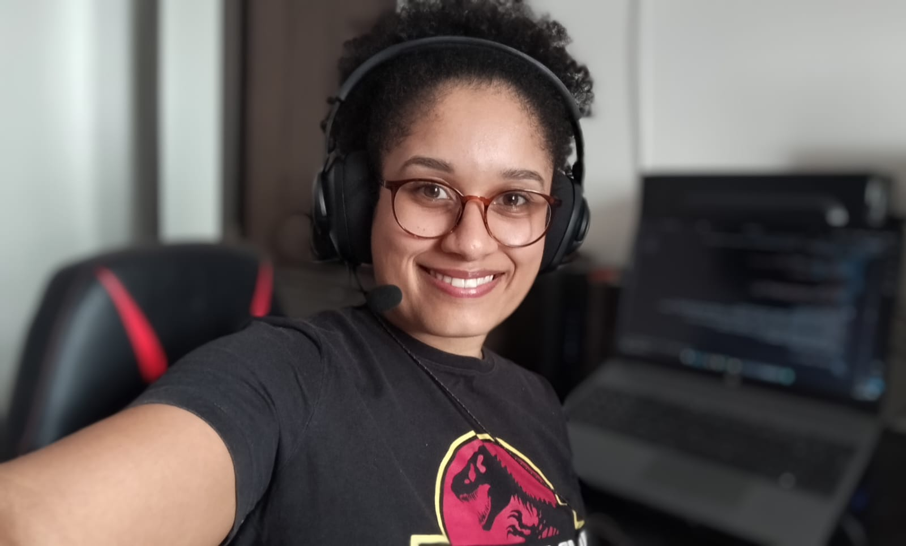

🔥 Técnica em Desenvolvimento de Sistemas, com foco em Front-end
🔭 Atualmente estou trabalhando na Datamac, cuidando do site da empresa e da criação de artes para redes sociais
🚀 Estou em constante aprendizado, desenvolvendo projetos com HTML, CSS e JavaScript, além de explorar Python e Inteligência Artificial
🌱 Cursando atualmente Modelagem de Dados com Python | Fundamentos de dados e Inteligência Artificial
⚡ Curiosidade: Nas horas vagas, adoro desenhar e explorar minha criatividade!
📫 Vamos conversar? patriciasilva.dev@gmail.com
👨💻 Mais em patriciasilvadev